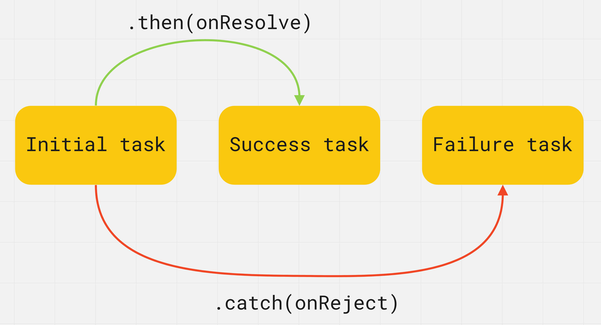

Polly obiecuje upiec ciasto na moje urodziny za dwa tygodnie. Jeśli
wszystko pójdzie dobrze i ona nie zachoruje, będę miał ciasto. Jeśli
Polly źle się poczuje, nie będzie mogła upiec ciasta. Tak czy
inaczej impreza się odbędzie. Sama obietnica nie jest gwarancją jej
spełnienia, nie wiemy więc z góry jaki będzie wynik działania.
Również w programowaniu są też zadania, których wynik poznamy
dopiero w przyszłości.
Promise (obietnica) - obiekt reprezentujący aktualny stan operacji
asynchronicznej. Jest to opakowanie na wartość nieznaną w momencie
tworzenia obietnicy. Pozwala traktować wyniki operacji
asynchronicznych tak, jakby były synchroniczne: zamiast końcowego
wyniku operacji asynchronicznej zwracana jest obietnica otrzymania
wyniku w przyszłości.
Obietnica może mieć trzy stany:
Oczekujący (pending) - stan początkowy podczas tworzenia i
wykonywania się obietnicy.
Spełniony (fulfilled) - operacja zakończona sukcesem, z określonym
wynikiem.
Odrzucony (rejected) - operacja została odrzucona z błędem.
Kiedy obietnica jest tworzona, jest w stanie oczekującym (pending),
po czym może zakończyć się pomyślnie (fulfilled), zwracając wynik
(wartość) lub z błędem (rejected), zwracając przyczynę. Kiedy
obietnica wchodzi w stan fulfilled lub rejected, jest to jej
ostateczny stan i już się nie zmieni.
Kiedy obietnica jest spełniona lub odrzucona, mówi się, że jest
zakończona (settled). Jest to po prostu termin mówiący o tym, że
obietnica jest w innym stanie, niż oczekujący.
Różnice między promise a funkcją callback
callbacks to funkcje, promises to obiekty
Wywołania zwrotne są przekazywane jako argumenty z kodu
zewnętrznego do kodu wewnętrznego, a obietnice są zwracane z kodu
wewnętrznego do zewnętrznego.
Callbacki obsługują udane lub nieudane zakończenie operacji,
obietnice niczego nie obsługują.
Callbacki mogą obsługiwać wiele zdarzeń, obietnice są powiązane
tylko z jednym zdarzeniem.
Tworzenie
Obietnica jest tworzona jako instancja klasy Promise, która
przyjmuje funkcję (executor) jako argument i wywołuje ją
natychmiast, jeszcze zanim obietnica zostanie utworzona i zwrócona.
Funkcja executor powiadamia instancję (obietnicę), kiedy i jak
operacja, z którą jest powiązana, zakończy się. Możemy w niej
wykonać dowolną operację asynchroniczną, po której zakończeniu
należy wywołać metodę resolve() - w przypadku powodzenia (stan
fulfilled), lub reject() w przypadku błędu (stan rejected). Wartość
zwracana (return) przez tę funkcję jest ignorowana.
resolve(value) - funkcja, którą powinniśmy wywołać po udanej
operacji. Argumentem do niej przekazanym będzie wartość spełnionej
obietnicy.
reject(error) - funkcja do wywołania w przypadku błędu. Jej
argumentem będzie wartość błędu dostępna w obsłudze odrzucenia
obietnicy.
// Change value of isSuccess variable to call resolve or reject
const isSuccess = true;
const promise = new Promise((resolve, reject) => {
setTimeout(() => {
if (isSuccess) {
resolve("Success! Value passed to resolve function");
} else {
reject("Error! Error passed to reject function");
}
}, 2000);
});
Metoda then()
Kod, który musi zrobić coś asynchronicznie, tworzy obietnicę i ją
zwraca. Kod zewnętrzny, po otrzymaniu obietnicy, dodaje do niej
programy obsługi. Po zakończeniu procesu kod asynchroniczny
umieszcza obietnicę w stanie fulfilled lub rejected a procedury
obsługi w kodzie zewnętrznym są wywoływane automatycznie.
Po utworzeniu obietnicy jej wynik jest przetwarzany w funkcjach
wywołania zwrotnego. Kod pisze się tak, jakbyśmy myśleli o tym, co
może się stać, jeśli obietnica zostanie spełniona, czy nie, bez
zastanawiania się nad ramami czasowymi.
Metoda then() przyjmuje dwa argumenty - funkcje wywołania zwrotnego,
które będą wywoływane, gdy obietnica zmieni stan. Jako argumenty
otrzymają wynik obietnicy, wartość lub błąd.
promise.then(onResolve, onReject)
onResolve(value) - zostanie wywołana po pomyślnym wykonaniu
obietnicy i otrzyma jej wynik jako argument.
onReject(error) - zostanie wywołany, po wykonaniu obietnicy z
błędem i otrzyma ją jako argument.
W tym przykładzie funkcja wywołania zwrotnego onResolve zostanie
wywołana po dwóch sekundach, jeśli obietnica się powiedzie, a
onReject również zostanie wywołana dwie sekundy później, jeśli
obietnica się nie powiedzie.
// Change value of isSuccess variable to call resolve or reject
const isSuccess = true;
const promise = new Promise((resolve, reject) => {
setTimeout(() => {
if (isSuccess) {
resolve("Success! Value passed to resolve function");
} else {
reject("Error! Error passed to reject function");
}
}, 2000);
});
// Will run first
console.log("Before promise.then()");
// Registering promise callbacks
promise.then(
// onResolve will run third or not at all
value => {
console.log("onResolve call inside promise.then()");
console.log(value); // "Success! Value passed to resolve function"
},
// onReject will run third or not at all
error => {
console.log("onReject call inside promise.then()");
console.log(error); // "Error! Error passed to reject function"
}
);
// Will run second
console.log("After promise.then()");
Jeśli funkcje onResolve i onReject zawierają złożoną logikę, dla
wygody są one deklarowane jako funkcje zewnętrzne i przekazywane do
metody then() przez samą nazwę.
Metoda catch()
W praktyce w metodzie then() obsługuje się tylko pomyślne wykonanie
obietnicy (pierwszy argument), a błąd jej wykonania w specjalnej
metodzie catch() służacej do „wyłapania" błędów.

promise.catch(error => {
// Promise rejected
});
Podana funkcja callback zostanie wywołana po wykonaniu obietnicy z
błędem i otrzyma ją jako argument.
// Change value of isSuccess variable to call resolve or reject
const isSuccess = true;
const promise = new Promise((resolve, reject) => {
setTimeout(() => {
if (isSuccess) {
resolve("Success! Value passed to resolve function");
} else {
reject("Error! Error passed to reject function");
}
}, 2000);
});
promise
.then(value => {
console.log(value);
})
.catch(error => {
console.log(error);
});
Metoda finally()
Ta metoda może być przydatna, jeśli musisz wykonać kod po
rozwiązaniu obietnicy (fulfilled lub rejected), niezależnie od
wyniku. Unika powielania kodu w procedurach obsługi then() i
catch().
promise.finally(() => {
// Promise fulfilled or rejected
});
Funkcja callback nie otrzyma żadnych argumentów, ponieważ nie można
określić, czy obietnica została spełniona, czy odrzucona. Tutaj
zostanie wykonany kod, który w każdym przypadku należy uruchomić.
// Change value of isSuccess variable to call resolve or reject
const isSuccess = true;
const promise = new Promise((resolve, reject) => {
setTimeout(() => {
if (isSuccess) {
resolve("Success! Value passed to resolve function");
} else {
reject("Error! Error passed to reject function");
}
}, 2000);
});
promise
.then(value => console.log(value)) // "Success! Value passed to resolve function"
.catch(error => console.log(error)) // "Error! Error passed to reject function"
.finally(() => console.log("Promise settled")); // "Promise settled"
Łańcuchy obietnic
Metoda then() zwraca w wyniku swojego wykonania kolejną obietnicę,
której wartością będzie to, co zwróci jej funkcja wywołania
zwrotnego onResolve. Pozwala to na budowanie asynchronicznych
łańcuchów obietnic.
Ponieważ metoda then() zwraca obietnicę, może minąć trochę czasu
zanim zostanie wykonana, więc reszta łańcucha będzie czekać. Jeśli
błąd wystąpi gdziekolwiek w łańcuchu, wykonanie wszystkich kolejnych
operacji then() jest anulowane, a kontrola przekazywana jest do
metody catch(). Dlatego catch() znajduje się na końcu łańcucha
obietnic.
Wyobraźmy sobie, że mamy funkcję asynchroniczną, która wykonuje
jakąś operację asynchroniczną, na przykład żądanie do serwera. Aby
przetworzyć wynik, należy ją zaprojektować tak, aby oczekiwała na
dwa możliwe wywołania zwrotne - na udane żądanie i na błąd.
const fetchUserFromServer = (username, onSuccess, onError) => {
console.log(`Fetching data for ${username}`);
setTimeout(() => {
// Change value of isSuccess variable to simulate request status
const isSuccess = true;
if (isSuccess) {
onSuccess("success value");
} else {
onError("error");
}
}, 2000);
};
const onFetchSuccess = user => {
console.log(user);
};
const onFetchError = error => {
console.error(error);
};
fetchUserFromServer("Mango", onFetchSuccess, onFetchError);
Teraz funkcja fetchUserFromServer() wie zbyt dużo o kodzie, który
będzie wykorzystywał wynik jej pracy. Oczekuje ona wywołań zwrotnych
i jest odpowiedzialna za wywołania pod pewnymi warunkami. Oznacza
to, że przekazujemy coś wewnątrz funkcji (callbacki) i mamy
nadzieję, że będzie działać poprawnie - to może doprowadzić do
niezbyt czystego kodu.
Lepiej, jeśli funkcja nie dba o kod, który użyje jej wyniku. Ona po
prostu wykonuje jakąś operację i zwraca wynik swojej pracy do
zewnętrznego kodu. Aby zwrócić wynik operacji asynchronicznej, z
funkcji musi zostać zwrócona obietnica. "Promisification" to
przekształcenie funkcji z wywołaniami zwrotnymi tak, aby nie
przyjmowała wywołań zwrotnych, ale jedynie zwracała obietnicę.
const fetchUserFromServer = username => {
return new Promise((resolve, reject) => {
console.log(`Fetching data for ${username}`);
setTimeout(() => {
// Change value of isSuccess variable to simulate request status
const isSuccess = true;
if (isSuccess) {
resolve("success value");
} else {
reject("error");
}
}, 2000);
});
};
fetchUserFromServer("Mango")
.then(user => console.log(user))
.catch(error => console.error(error));
Większość nowoczesnych bibliotek opiera się na obietnicach. Podczas
wywoływania metody dla operacji asynchronicznej jej wynik jest
dostępny jako obietnica, do której można dołączyć procedury obsługi
w metodach then() i catch().
Metody klasy Promise
Są zadania, w których musisz pracować z całą kolekcją obietnic.
Czasem wtedy musimy poczekać, aż wszystkie zostaną wykonane, a
dopiero potem przetworzyć ich wyniki, a w czasem wystarczy poczekać
na wykonanie którejkolwiek z nich, ignorując resztę itp. W tych
przypadkach klasa Promise ma statyczne metody do pracy z jedną
obietnicą lub grupą obietnic.
Promise.all()
Przyjmuje tablicę obietnic, czeka na ich spełnienie i zwraca wspólną
obietnicę. Jeśli wszystkie obietnice z tablicy się powiodą, zwrócona
obietnica przejdzie do stanu fulfilled, a jej wartością będzie
tablica wyników realizacji każdej przekazanej obietnicy. Jeżeli
chociaż jedna z obietnic zostanie odrzucona, to zwrócona obietnica
przejdzie do stanu rejected, a jej wartością będzie napotkany błąd
wyrzucony przez odrzuconą obietnicę.
Promise.all([promise1, promise2, promise3, ...])
Napiszmy funkcję, która pobiera tekst dla resolve() i opóźnienie w
milisekundach, a w wyniku jej wykonania zwraca obietnicę. Następnie
stworzymy dwie obietnice z różnymi czasami opóźnienia.
Wywołanie zwrotne metody then() zostanie wywołane po trzech
sekundach, czyli po spełnieniu "dłuższej" obietnicy promiseB.
Obietnica promiseA zostanie wykonana w ciągu jednej sekundy i jej
wynik będzie po prostu czekać. Jeśli którakolwiek z obietnic
zostanie odrzucona, wywołana zostanie funkcja zwrotna metody
catch().
Promise.race()
Zwraca spełnioną lub odrzuconą obietnicę, w zależności od wyniku, z
jakim zakończy wynikiem się „najszybsza" z przesyłanych obietnic, z
wartością lub powodem jej odrzucenia.
Promise.race([promise1, promise2, promise3, ...])
Gdy przynajmniej jedna obietnica z tablicy zostanie spełniona lub
odrzucona, zwrócona obietnica przejdzie w stan resolved lub
rejected, a cała reszta zostanie odrzucona.
Wywołanie zwrotne metody then() lub catch() zostanie wywołane
sekundę później po wywołaniu metody ponieważ wtedy promiseA zwraca
wynik. Druga obietnica promiseB zostanie zignorowana.
W praktyce race() jest metodą niemalże nieużywaną w codziennych
zadaniach programistycznych.
Promise.resolve() i Promise.reject()
Statyczne metody do tworzenia natychmiastowyo udanych lub
odrzuconych obietnic. Działają w taki sam sposób, jak new Promise()
z wyjątkiem tego, że można określić ich opóźnienie, ale mają krótszą
składnię.
Te metody są używane podczas "promisification" funkcji, gdy trzeba
zbudować łańcuch obietnic, a początkowa wartość już istnieje.
Zrefaktorujmy następujący kod.
const makeGreeting = guestName => {
if (guestName === "" || guestName === undefined) {
return {
success: false,
message: "Guest name must not be empty",
};
}
return {
success: true,
message: `Welcome ${guestName}`,
};
};
const result = makeGreeting("Mango");
if (result.success) {
console.log(result.message);
} else {
console.error(result.message);
}
Wykorzystując wywołania zwrotne, nie ma potrzeby zwracania złożonych
obiektów ze statusem operacji i sprawdzania go w kodzie zewnętrznym.
const makeGreeting = (guestName, onSuccess, onError) => {
if (guestName === "" || guestName === undefined) {
return onError("Guest name must not be empty");
}
onSuccess(`Welcome ${guestName}`);
};
makeGreeting(
"Mango",
greeting => console.log(greeting),
error => console.error(error)
);
Ostatnim krokiem jest "promisification" funkcji makeGreeting(), w
celu całkowitego usunięcia jej zależności od kodu zewnętrznego.
const makeGreeting = guestName => {
if (guestName === "" || guestName === undefined) {
return Promise.reject("Guest name must not be empty");
}
return Promise.resolve(`Welcome ${guestName}`);
};
makeGreeting("Mango")
.then(greeting => console.log(greeting))
.catch(error => console.error(error));
Pętla zdarzeń
W tej sekcji znajdziesz linki do dodatkowych materiałów dotyczących
pętli zdarzeń w JavaScript - mechanizmu wykonywania kodu
synchronicznego i asynchronicznego.